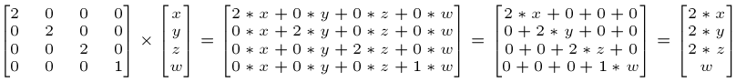

Аббревиатура GLSL расшифровывается как OpenGL Shading Language, где буква O пропускается, а GL обозначает Graphics Library.
Язык GLSL представляет собой C-подобный язык программирования со встроенной небольшой математической библиотекой. Слово "встроенная" обозначает, что никаких команд вида #include <math.h> делать не нужно, все математические функции доступны по-умолчанию.
В этой статье излагаются, по большей части, особенности работы с фрагментным шейдером. В минимальной комплектации такой шейдер принимает координаты обрабатываемой им точки, и выдает цвет этой точки. Дополнительно, такой шейдер может использовать значение времени, чтобы иметь возможность генерировать динамическую картинку как функцию от времени.
Кроме того, в этой статье излагаются только начальные сведения о языке шейдеров, знание которых достаточно для написания несложных шейдеров. Такие шейдеры могут пригодиться, например, для One Scene Shader Compo на Demoparty.
Для быстрого понимания работы с фрагментными шейдерами можно воспользоваться web-ресурсом ShaderToy.com или программой Bonzomatic.
Примечание: программа Bonzomatic, по сути, работает именно с языком GLSL в чистом виде. А онлайн-сервис ShaderToy делает дополнительное окружение для работы шейдеров, поэтому в нем обращение к входным данным и формирование выходных данных происходит несколько по-другому, чем на "чистом" GLSL. В этой статье рассматривается стандартное "чистое" окружение GLSL.
Общая структура кода шейдера
Код шейдеров начинается с объявления версии (например, 410 core). Номер версии необходим, чтобы программное окружение, перед запуском шейдера, могло проверить, понимает ли GPU указанную версию языка шейдеров.
Далее следует список входных/выходных переменных и uniform-переменных. Что такое uniform-переменные, будет объяснено ниже по тексту.
Далее пишутся вспомогательные функции и функция main(). Отправной точкой каждого шейдера является функция main(), в которой происходит обработка всех входных переменных и вывод результата работы через выходные переменные.
В общем виде код шейдера (неважно, вершинный это шейдер или фрагментый), выглядит так:
#version номер_версии
in type inVar1;
in type inVar2;
out type outVar;
uniform type anyUniformVar;
void main()
{
...
outVar=...;
}
Базовые типы
Основные базовые типы
Примитивные базовые типы следующие:
int, uint, float, double, bool
Векторные типы
Векторные типы следующие:
где N - это размер вектора. N может принимать значения от 2 до 4.
В наименовании типов, не только векторных, но и остальных, работает следующее правило:
В большинстве задач используется тип vecN, так как точности float, в принципе, неплохо хватает для всевозможных графических преобразований.
Для доступа к элементам вектора (от 1-го до 4-го) используются имена .x, .y, .z, .w:
vec4 myVector;
...
myVector.x=0.98;
...
float multiplyFactor=myVector.w;
Так же допустим синтаксис с буквами rgba - для работы с цветом, и stpq - для работы с текстурными координатами. Другими словами, буквы x, r, s служат для доступа к первому элементу ... а буквы w, a, q дают доступ к четвертому элементу.
Кроме того, из вектора большей размерности можно формировать вектор такой же или меньшей размерности. Например, если из вектора размерности 4 надо получить вектор размерности 2, отбросив элементы 3 и 4, то можно писать так:
vec4 myVector4;
...
vec2 myVector2=myVector4.xy
Здесь используется важная возможность синтаксиса векторов, называемая перетасовкой. В общем случае, перетасовка позволяет использовать следующий синтаксис:
vec2 someVec;
vec4 differentVec = someVec.xyxx;
vec3 anotherVec = differentVec.zyw;
vec4 otherVec = someVec.xxxx + anotherVec.yxzy;
Здесь вектор differentVec получит элементы 3 и 4 равные компоненте x вектора someVec. Следующие строки понятны по-аналогии.
Но нужно иметь в виду, что можно использовать любую комбинацию до 4-х букв для создания нового вектора только тогда, когда в исходном векторе реально присутствуют запрашиваемые компоненты; например, невозможно получить доступ к компоненте .z в векторе типа vec2, так как он содержит всего 2 компоненты — .x и .y.
Для доступа к элементам вектора, помимо буквенных компонент, можно использовать числовые индексы:
vec3 position;
...
float x=position[0];
Векторы можно передавать в качестве аргументов для конструкторов векторов, уменьшая тем самым количество требуемых аргументов:
vec2 vect = vec2(0.5, 0.7);
vec4 result = vec4(vect, 0.0, 0.0);
vec4 otherResult = vec4(result.xyz, 1.0);
Матричные типы
Матрицы - это, грубо говоря, массивы размером MxN. В GLSL есть готовые типы, чтобы представлять квадратные матрицы размером от 2 до 4:
mat2 - это матрица 2x2 с элементами типа float
mat3 - это матрица 3x3 с элементами типа float
mat4 - это матрица 4x4 с элементами типа float
dmat2 - это матрица 2x2 с элементами типа double
dmat3 - это матрица 3x3 с элементами типа double
dmat4 - это матрица 4x4 с элементами типа double
Обычно матрицы используются для вычисления каких-либо трансформаций. Матрицы можно использовать совместно с векторами, тогда вектор рассматривается как вертиальная матрица:
vec4 TransformedVector = TranslationMatrix * RotationMatrix * ScaleMatrix * OriginalVector;
Пример умножения матрицы на вектор, в результате чего получается вектор:
vec4 outVec = scaleMatrix * inVec;

Массивы
Одномерные массивы в GLSL по своему поведению похожи на массивы в языке Си. Размер массива фиксирован и задается с помощью константного выражения времени компиляции:
float myValues [12];
Длинну массива можно узнать через метод length():
myValues.length (); // Возвращает 12
Обращение к элементу массива происходит через индекс:
myValues[5]=10;
float a=myValues[1];
Индексы в массивах начинаются с нуля. В отличие от языка Си, никаких неявных свойств вроде "имя массива является указателем на его начальный элемент" в GLSL нет.
Добавить семлеры, структуры
Запись чисел и инициализация векторов и матриц
Числа
Чтобы в момент компиляции шейдера не возникало элементарных ошибок, необходимо помнить следующие базовые правила.
Если идет работа с переменными целых типов int и uint, то числа записываются просто как целые числа:
int a = 100;
ivec3 aVec = ivec3(100, 2000, 30000);
Если идет работа с переменными вещественного типа, то числа необходимо записывать с использованием точки:
float b = 100.0;
vec3 bVec = vec3(100.0, 2000.0, 30000.0);
Похоже, что в разных версиях шейдеров разные требования к инициализации float/double переменным. В одних версиях компилятор шейдера допускает инициализацию вещественного числа литералом без точки, в других не допускает. Для гарантированной переносимости рекомендуется инициализировать вещественные числа с обязательным использованием точки.
Векторы
Люди, привыкшие к синтаксису конструкторов в C++, могут на автомате написать такую инициализацию вектора:
vec3 c(1.5, 2.7, 3.9);
- так вот, этот синтаксис не поддерживатеся в GLSL! Инициализацию вектора при создании правильно писать так:
vec3 c = vec3(1.5, 2.7, 3.9);
Матрицы
Матрицы можно инициализировать тремя способами. Первый - поэлементная инициализация, это самый непрактичный (медленный) способ:
mat2 a;
a[0][0]=0.1;
a[0][1]=0.2;
a[1][0]=0.3;
a[1][1]=0.4;
Индексы матрицы устроены так: первое число - это номер столбца, второе число - это номер строки. Таким образом, приведенный выше код создаст матрицу:
0.1 0.3
0.2 0.4
Второй способ - это "линейная" инициализация, когда начальные значения перечисляются друг за другом в конструкторе. Вначале задаются значения первого столбца, затем второго и т.д.:
mat2 a=mat2(1.1, 2.2, 3.3, 4.4);
Еще есть способ инициализации матрицы в так называемом column-major формате. В конструктор первым аргументом передается первая колонка в виде вектора, затем вторая колонка и т.д. до размерности матрицы:
// Единичная матрица в column-major формате
const mat3 mIdentity = mat3(vec3(1, 0, 0),
vec3(0, 1, 0),
vec3(0, 0, 1));
Простые Uniform-переменные
Переменные, объявляемые с помощью ключевого слова uniform, служат для передачи данных от микропроцесора (CPU) в шейдер (код которого, как известно, выполняется на GPU). Все такие входные данные будут одинаковыми для всех потоков GPU (т. е. однородными, uniform) и доступными только для чтения.
Например, в шейдере можно прописать uniform-переменную pixelColor:
#version 330 core
out vec4 FragColor;
uniform vec4 pixelColor;
void main()
{
FragColor = pixelColor;
}
А значение этой переменной можно задать в C/C++ коде, перед тем, как шейдер будет запущен на выполнение:
int pixelColorLocation = glGetUniformLocation( shaderProgram, "pixelColor" );
glUseProgram( shaderProgram );
glUniform4f( pixelColorLocation, 0.0f, 0.5f, 0.0f, 1.0f );
Ключевое слово uniform может быть использовано для объявлений uniform-переменных любого типа. Переменные, объявленные с ключевым словом uniform, в шейдере являюся, по сути, глобальными переменными.
В программе Bonzomatic код на C++ заранее подготавливает несколько uniform-переменных для фрагментного шейдера. Вот как они прописываются в шейдере:
uniform float fGlobalTime; // in seconds
uniform vec2 v2Resolution; // viewport resolution (in pixels)
uniform float fFrameTime; // duration of the last frame, in seconds
uniform sampler1D texFFT; // towards 0.0 is bass / lower freq, towards 1.0 is higher / treble freq
uniform sampler1D texFFTSmoothed; // this one has longer falloff and less harsh transients
uniform sampler1D texFFTIntegrated; // this is continually increasing
uniform sampler2D texPreviousFrame; // screenshot of the previous frame
Помимо простых uniform-переменных,в GLSL существуют юниформ-блоки. Здесь они не рассматриваются, но читатель должен знать, что и такие конструкции есть в спецификации GLSL.
Входящие и выходящие переменные шейдера
Входящие и выходящие (а может быть, правильнее входные и выходные?) переменные шейдера обозначаются с помощью ключевых слов in и out. Они служат для передачи данных между шейдерами. Когда работает графический конвейер, шейдеры могут объединяться в цепочки. И чтобы один шейдер мог принять от предыдущего шейдера данные, а итоговые данные передать дальше по цепочке, в языке GLSL существуют входящие и выходящие переменные шейдеров.
Каждая входящая/выходящая переменная шейдера имеет свой тип и название. В простейшем случае, если следующий по цепочке шейдер имеет входящую переменную с тем же типом и названием, что и исходящая переменная предыдущего шейдера, то во входящей переменной такого шейдера появится значение, переданное от предыдущего шейдера. Обычные входящие/выходящие переменные шейдера пишутся так:
in type inVar1;
in type inVar2;
out type outVar;
В случае фрагментного шейдера подсистема GLSL ожидает, что у шейдера будет выходящая переменная, обозначающая цвет точки. Выглядит это так:
out vec4 FragColor;
Однако, в случае Bonzomatic, результирующий цвет точки передается не простой выходящей шейдерной переменной, а через переменную out_color, объявленную с помощью дополнительной layout-спецификации:
layout(location = 0) out vec4 out_color;
И кроме того, в случае Bonzomatic, у фрагментного шейдера нет входящей переменной с координатами точки. Вместо этого координату точки в коде шейдера можно получить из глобальной переменной gl_FragCoord.
Особенности записи аргументов функций
Функции в GLSL определяются так же как и в языке Си++, но есть некоторые отличия.
При описании переменных функций используется обычный Си++ синтаксис, обеспечивающий передачу по значению. Синтаксиса передачи указателя или ссылки через использование звездочки "*" и амперсанда "&" не предусмотрено. Зато есть квалификаторы, которые можно писать перед параметрами функций.
Ниже дан пример описания заголовка функции:
int newFunction(vec2 coordinate, // обычный аргумент функции, передача по значению
in vec4 aVec4, // только для чтения
out vec3 aVec3, // только на запись, меняется внешняя переменная
inout int aInt); // чтение и запись, меняется внешняя переменная
Математические функции
Здесь кратко перечислены доступные математические функции:
sin(), cos(), tan(), asin(), acos(), atan(), radians(), degrees(), pow(), exp(), log(), exp2(), log2(), sqrt(), inversesqrt(), abs(), sign(), floor(), ceil(), fract(), mod(), min(), max(), clamp(), mix(), step(), smoothstep(), length(), distance(), dot(), cross(), normalize(), faceforward(), reflect(), refract(), matrix(), matrixCompMult(), lessThan(), lessThanEqual(), greaterThan(), greaterThanEqual(), equal(), notEqual(), any(), all(), not()
Более подробная информация об их использовании дана в следующей статье: Математические функции языка шейдеров GLSL.
Функции получения значения из текстур
В шейдерах GLSL имеется возможность работать с текстурами. Текстуры должны быть заранее загружены окружением в видеокарточку.
Для полчения цвета точки из двухмерной текстуры, можно воспользоваться функцией texture2D():
vec4 texture2D(sampler2D sampler, vec2 coord)
vec4 texture2D(sampler2D sampler, vec2 coord, float bias)
Первый параметр - это указатель на текстуру. Второй параметр - это координаты пикселя (если быть более точным, то это координаты текселя). Третий необязательный параметр используется в случае, если текстура загружена с помощью механизма ступенчатой детализации MIPMAP, и задает смещение итоговой точки, из которой берется цвет.
Функция texture2D() возвращает цвет в виде вектора vec4, в формате RGBA.
В некоторых реализация GLSL, эта функция доступна только во фрагментном шейдере.
Помимо двумерных текстур существуют так же и трехмерные текстуры. У них тоже можно узавать цвет в заданной точке трехмерного пространства. Для этого используется функция:
vec4 textureCube (samplerCube sampler, vec3ordin)
vec4 textureCube (samplerCube sampler, vec3ordin, float bias)
Использование этой функции точно такое же как и для двумерной текстуры. Только точка, в оторой нужно взять цвет, задается с помощью трехмерного вектора.